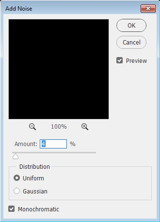
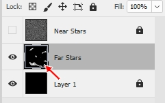

|
PART II:
The Space Scene |
|
Step 10: Star Field |
|
The first thing we need to create is a star field that will sit behind our
planets, sun, asteroids, and other stuff in our image. We are actually going
to create 4 different levels of stars to give our space scene a feeling of
depth and make it look awesome.
FOLLOW
THE DIRECTIONS BELOW CAREFULLY
- Open your Space file in Photoshop
- Let's start by making sure we are using solid black as our Foreground
color -
Press D on the keyboard - this is the keyboard shortcut
to reset the Foreground and Background colors to
their default colors (black and white)
- Use the Paint Bucket Tool to fill Layer 1
with black
Our only layer at this point is named Layer 1 instead of
Background because we chose Transparent for the Background
Contents option in the New file window in Step 09.
This saves us from having to convert the layer. Yeah us.
- Lock Layer 1 as we will not be editing it at all during this step
but leaving it in the background so we always have some black to see our
stars
- At the bottom of the Layers panel, click the
Create a new layer button...
- Double-click the new layer's name to select the name and rename the
layer Far Stars (if the Layer Style window pops up simply use the red X
to close it and try again, but be sure you are actually clicking on the layer's
name) - you should now have the following layers...
- Press
Alt+Backspace to fill the
Far Stars layer with black (this is the keyboard shortcut to fill the current selection with the
foreground color - I know, cool huh?)
- Make sure the Far Stars layer is selected (it should be highlighted
in gray in the Layers panel - see the image above)
- Press Ctrl++ (the Ctrl key and the + key) on the keyboard to set the Zoom level to 100%...
- Click Filter then point at Noise and click Add Noise...
The Add Noise window appears...

- Make your settings match the image below...
Remember that these settings are not set in stone - you can adjust them to
whatever you like when you are working with your own images in the future,
but for now let's all use these settings as they will allow us to create quick,
simple stars
NOTE: Make certain that you have Monochromatic checked. If
Monochromatic (which simply means we are working with a variation of one
color, in this case white) is unchecked we will get a field of noise that
includes red, yellow, blue, purple, and other colors...

This will create unrealistic multi-colored stars and destroy the illusion of our amazing
space scene
When Photoshop applies the Noise filter it generates a random noise pattern.
In other words, everyone will have a different noise pattern and thus will
have a unique layout of stars.
- Click OK
We need to duplicate the Far Stars layer at this point so that we can simulate
some stars that are nearer to us and brighter.
- Right-click the Far
Stars layers and click Duplicate Layer...
- Rename the new layer to Near Stars and click OK
- Lock the Near Stars layer then turn its visibility off - you should now
have the following layers...
We will work on our Far Stars layer first and come back to the Near Stars
layer a little later on
- Make the Far Stars layer the active layer - it should be highlighted in
gray...
The 'stars' we are making are very sharp and crisp at this point, so let's
soften them up a little to help them look like they are actually glowing balls
of gas.
- Click Filter then point at
Blur and click Gaussian Blur... - the Gaussian Blur window
opens...
Gaussian Blur tends to make images appear softer or slightly out of
focus
- Make your settings match the image below...
- Click OK
To turn this static into stars, we are going to use the Levels editor -
yes, the same one we used when we turned our face blue - to remove most of the
white and be left with a random spattering of dots which will be our stars.
- Click Image then point at Adjustments and then click
Levels
- Click the black Input Level slider (red arrow below)...
and drag it slowly to the
right (the gray slider will move to the right automatically) - notice
as you drag that the noise starts to go away - stop dragging at around
215
- Click the white Input Level slider (the one on the right) and drag it slowly to the
left - notice as you
drag that the stars become brighter and more refined - stop dragging around
235 - you should now have this...
Yes, the three sliders are really close together
|
By the way, if your histogram looks like
this...

Congratulations, you did it WRONG.
Click Cancel and go back to direction 16.
|
- Click OK
- Zoom out to 50% - your current star field should look
something like this...
Notice that our stars are distributed fairly evenly around our image. In
reality, there are sections of the sky that appear to the naked eye to have no
stars. Let's take a second and give our space scene a small section or two of
emptiness.
- Click the Eraser Tool...

We don't want to use a simple round brush to create our areas of empty
space as it will be obvious that we have removed stars because there will be
hard edges to our emptiness, so let's choose a more random brush.
- Click the Brush Preset picker option and
select the Dry Brush Tip Light Flow brush...
You will have to scroll down the brush list to find the correct shape
- Change the Size to 200 px...
- Make sure you are on the Far Stars layer (the other two layers should be
locked) and click randomly in a few places to remove some stars - keep in mind that the eraser you are using has a
very scattered shape so that you can create dark areas that are not
necessarily totally dark but still contain a very scattered group of stars, so
if you want to create a truly empty area you will need to do repeated clicks and drags
over the same area to
totally remove everything
DO NOT GO CRAZY WITH THIS!!
We
just want to remove a few stars here and there. Look at the two images
below...
Notice that you really have to look hard to notice where the areas of empty
space are. If you look at the Far Stars layer's thumbnail image on the Layers
panel (the red arrow in the image
below)
you can see exactly where you removed the stars because you will be able to see
white spots...

This is what we want at this point - later we will be adding more stars and
these few blank areas will become more noticeable.
Now that we've got some stars that appear dim and far away, let's create some
average looking stars that appear to be a little closer to us. To pull this off
we simply have to make a duplicate of our Far Stars layer and then break out our
Eraser Tool again.
- Lock the Far Stars layer
- Right-click the Far Stars layer and click Duplicate
Layer
- Name the duplicate layer Average Stars...
- Click OK
At this point, each layer is actually covering up every other layer. With
multiple layers of stars, it would be great to have a way to see what is
under a layer while still being able to see the contents of that layer. Lucky
for us
blending modes are a thing.
- Unlock the Average Stars layer
- Click the Set the blending mode for the layer drop-down arrow
(red arrow below) and select Linear Dodge (Add)...
This allows us to
see what is below this layer
The Linear Dodge (Add) blending mode allows us to see through the black on
the layer to what's underneath it. OK, to be totally honest here, Linear Dodge
(Add) actually does more than make black see-through, but for what we are
doing now, knowing that it allows us to see-through black is good enough. Notice that
many of the stars are now brighter because we actually have two identical
images on top of each other and they are complimenting each other to make the
stars brighter. We now need to remove most of the stars from the Average Stars
layer so that we have some dim stars that appear far away (now you know why we
named the first layer Far Stars) and some brighter stars that seem closer (the
Average Stars layer). A few directions from now we will get some stars that
appear very near to us as well as some awesome bright stars.
- Make sure the Average Stars layer is the active layer (all other
layers should be locked and the visibility of the Near Stars layer should be
off)
- Click the Eraser Tool
- Erase most of the stars from your Average Stars layer - remember
to keep an eye on the layer's thumbnail on the Layers panel to see where and how
much of your Average Stars you are removing - you want to end up with
something like this...
You can turn the visibility of the Average Stars layer on and off to see
exactly what impact this layer is having on your star field
Don't worry about trying to remove stars from your Average Stars layer in
the same patter as I
did - try to be unique. As the direction above stated, you want to remove most of your Average
Stars so that what's left will work with the Far Stars layer to give your star
field some depth. If you leave too many Average Stars you end up with stars
that all look the same. Your star field should now look something like this...

Note that your stars will NOT look like mine
We have some pretty awesome looking far and average stars, so let's add in a
few near stars to complete the sense of depth.
- Lock the Average Stars layer
- Turn the visibility of the Near Stars layer on and unlock it
- note that when you do this that your image should now covered with
noise...

- Click Filter then point at
Blur and click Gaussian Blur...
- Set the Radius to 2 Pixels - this will make your noise
really blurry - and click OK
- Click Image then point at Adjustments and then click
Levels...
- Drag the black Input Level slider to the
right and stop at 145...
- Drag the white Input Level slider to the
left as far as it will go...
Notice that it stops automatically at 147...
The closest you can make the black and white sliders
is two numbers apart
- Click OK
Notice that you have only a few stars that are slightly larger than those
on the Far Stars and Average Stars layers...
This is good - this is what we want at this point.
- Change the blending mode of the Near Stars layer to
Linear Dodge (Add) - you should now be able to see all of the stars in
your image
We do have a slight issue at this point. Recall that we made a copy of our
noise filled layer all the way back in direction 13, so at this point all of
our layers have stars sitting in the exact same place. If we leave our star
field like this we will simply be creating several really bright stars on top
of other stars. Let's add some variety to our star field by adjusting the Near
Stars layer so that we are not covering up other stars.
- Make sure the Near Stars layer is the active layer - it
should be highlighted in gray
- Click Edit on the Menu Bar then point at Transform and
click Flip Vertical...
At first it may look like nothing happened because there are so few
stars on the Near Stars layer, but turn the visibility of the Near Stars layer
off and on and you will see the impact that it has. It is not making an enormous
change, but by having these slightly brighter stars we have given our space
scene some awesome depth.
You should have something similar to the image below...
You should notice that there are areas of dense stars and areas
of fewer stars and that the areas of no stars are now more obvious. Feel free to remove more or less stars until you get something
you like. Be careful though - once you remove stars it can be very difficult to
get them back if you change your mind.
Now that our basic star field is ready to go, let's give it a sense of
uniqueness and coolness by adding a few really bright stars.
- Lock the Near Stars layer
- Insert a new layer and name it Bright Stars - make sure
this new layer is at the top of the layer stack and is selected
- Use the Paint Bucket Tool to fill the Bright Stars layer with black
- Change the blending mode of the Bright Stars layer to Linear Dodge (Add)
- Click the Dodge Tool...
The Dodge Tool simply brightens up an area of an image, so it is perfect for
creating bright spots that look like stars
- On the Dodge Tool Options Bar, change the Range: setting from
Midtones to Shadows...
Make sure Exposure is set to 50% (if Protect Tones is checked, turn it off by clicking the box)
- Change the Brush to Soft Round and set the size to 5 px...
Choose the area of your image you would like to add a bright star. Remember
that in later steps you will be adding a bunch of other stuff like planets,
asteroids, a comet, and more, so put your bright stars in places that you will
not cover up later on.
-
Press D on the keyboard to reset the Foreground color to black and
the Background color to white...
-
Click the Switch Foreground and
Background Colors icon...
You should now have white as your Foreground color and black as your
background color...
-
Click
repeatedly in one spot until the spot glows white (about 15 clicks seems to
work well) - be careful not to click and drag but instead click in the same
spot over and over and over and over and over and over and over and over and
over and over and over and over and over and over and over...
Note that the image above is zoomed in to 500% to show the detail
- Press the right bracket key ] to increase the brush size
to something slightly larger, such as 9 px, and then click some more in the same spot (don't
click as many times as you did in the last direction - try around 10 clicks
this time - so that what you are creating now is not as bright)...

- Increase the brush size again (this time to around 15 px) and
click some more (around 5 clicks or so this time)...

- Increase the brush size one more time (try from 20 to 25 px) and
click a few more times (only 3 or 4)...
Note that the image above really doesn't look all that great because the
image is actually being displayed in a webpage - your image in Photoshop
should look much nicer
- Determine if you like your star at this point or if you want to
change it - you can increase the brush and click a few more times, or you
can grab the Eraser Tool and remove what you have and start over, but this
time vary the above brush sizes and click recommendations so that you have a
really nice looking, unique star
You may be tempted to keep going and make a really, really big glowing
star, but don't. If you make your star too large it
will seem unnatural. Remember that we want realistic looking stars
and not huge white blobs.
One way to get unique bright stars is to choose a patterned brush such
as Spatter, Star (NOT the 5 pointed star), Starburst, or any other brush shape that gives you a nice
looking star (do not use Fuzzball, Flowing Stars, any of the leaf or grass
brushes, or any other brush that looks unnatural). You can even load new
sets of brushes by clicking the drop-down arrow on the Brush Preset Picker
(left arrow below)
and then clicking the menu icon (right arrow below) and selecting the brush set you wish to use
at the bottom of the pop-up menu, as in the graphic below...
Take some time to
look at many of the brush sets to see if there are any brushes you would
like to use (again, stay away from the brushes shaped like grass or leaves
as well any that are square as there are no square stars - the only
exception to this is the Charcoal Large Smear brush which looks square, but
when you click repeatedly with it the square actually rotates to create an
interesting cloud formation that you can use to make a cool far off nebula
or the cloud around a bright star). Try to make your stars
unique and something other than a perfect circle (feel free to add some color to your bright stars if you wish, but
remember to keep it subtle)
To help you out with making some really unique starts, have a look at the
image below...

The really cool stars in the middle column were created using
the brushes in the left column, which can be found in the brush set indicated in
the right column. Keep in mind two very important things as you create your
bright stars:
-
Customized stars will give your space scene a unique,
individual look that will make it stand out
-
Your stars need to look REALISTIC - take a look at the
stars below...
Notice that only the bright star on the right looks like a real star in space -
the other stars may be cute or adorable but they are not realistic
-
Add in three or four bright stars (if you add too many you will limit
where you can put the planets and stuff we will be adding later) -
DO NOT copy
the same star over and over (no two real stars look exactly alike) and DO NOT use the same brush multiple
times - this looks unnatural; make each star unique - here is a close-up of my four stars...
Notice that the stars are all unique, and that the third one from the left
has just a slight amount of yellow added to it (I know, they are awesome)
Let me say that one more time:
DO NOT copy the same bright star multiple times
Be careful not to go crazy with how big you make your bright stars. Take a
look at the image below...

Notice that it looks like a fake star when you compare it to the stars below -
we are striving to make our image as realistic as possible
Your star field should now be complete, and should look something like this (remember
that your stars will be in different places than mine)...

Notice that my bright stars are not overly large and serve to add a nice
accent to my star field. Notice also that all four of them do NOT look the
same. When you have completed your bright stars, you will
need to reset the brush set back to the Default set.
- Click on the Brush Preset Picker and open the Brush Set menu and select
Reset Brushes...
- Photoshop will ask if you wish to load the default brushes...
Click OK
Before we continue creating our amazing space panorama, we need to put all of
the star field layers into one layer group so that we can work with them all
at the same time to do such things as turn off their visibility or rearrange
them in the layer stack.
-
Select all of the layers by clicking the top layer (Bright Stars) then
pressing and holding Shift and clicking the bottom layer (Layer 1)...
-
Click the Create a new group icon to create a group containing all of the layers (the red arrow below)...
-
The layers will be inserted into a group called Group 1...
Note that you can expand the group and view the
layers in it at any time by clicking the arrow head between the eye and the
folder icon...
-
Double-click the name Group 1 and rename it Star Field...
-
Lock the Star Field layer group so you do not accidentally mess up any of the
layers...
In the next Step we will give our space scene some color by adding in a
nice nebula.
- Save your Space file
01 |
02 |
03 |
04 |
05 |
06 |
07 |
08 |
09 | 10 |
11 |
12 |
13 |
14 |
15 |
16 |
17 |
18 |
19 |
20